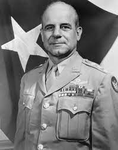
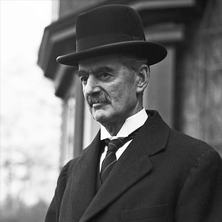
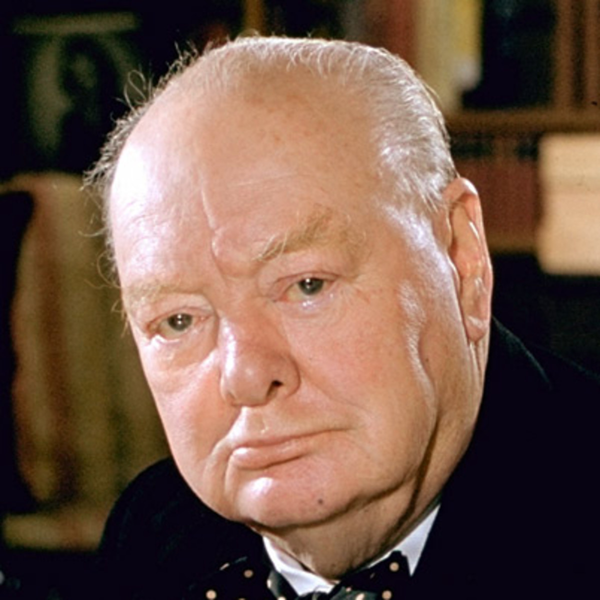
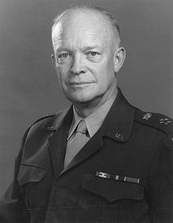
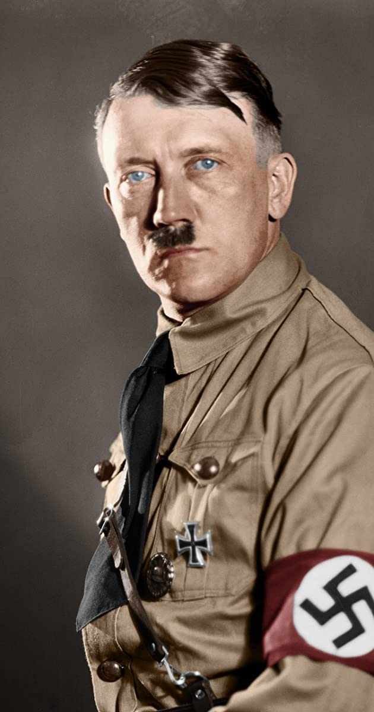
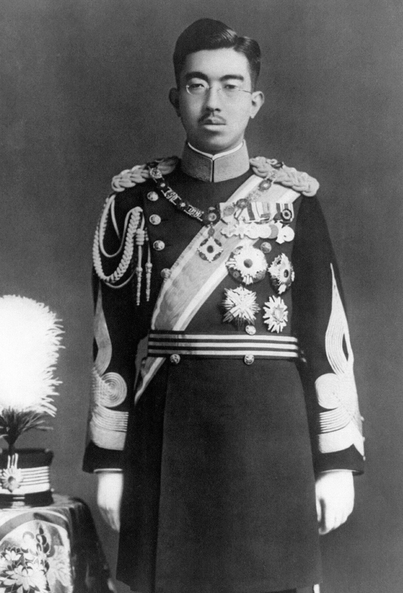

A U.S. Army general best known for leading the famous “Doolittle Raid” in 1942, in which B-25 bombers were launched from an aircraft carrier to bomb Japan and then crash-landed in China.
The prime minister of Britain from 1937 to 1940, who advocated a policy of Appeasement toward the territorial demands of Nazi Germany. This appeasement policy essentially turned a blind eye to Germany’s 1938 annexation of Austria and the Sudetenland.
The prime minister of Britain during most of World War II. Churchill was among the most active leaders in resisting German aggression and played a major role in assembling the Allied Powers, including the United States and the USSR.
A U.S. Army general who held the position of supreme Allied commander in Europe, among many others. Eisenhower was perhaps best known for his work in planning Operation Overlord, the Allied invasion of Europe. After the war, he was a very popular figure in the United States and was elected to two terms as U.S. president, taking office in 1953.
Chancellor and self-proclaimed Führer, or “leader,” of Germany from 1933 until his suicide in 1945. After a rapid political ascent as the leader of the far-right Nazi Party in the 1920s, Hitler achieved absolute power and maintained it throughout his time as chancellor. During his rule, he took a very active role in the government of Germany, making military decisions and implementing edicts regarding the treatment of Jews and other minorities, such as the notorious “Final Solution” that condemned Jews to death at Concentration Camps in German-controlled parts of Europe. Just before Germany surrendered in 1945, Hitler committed suicide together with his wife, Eva Braun, in his bunker in Berlin.
Emperor of Japan from 1926 until his death in 1989. Despite the power of Japan’s military leaders, many scholars believe that Hirohito took an active role in leading the country and shaping its combat strategy during World War II. After Japan’s defeat, he was allowed to continue to hold his position as emperor—largely as a figurehead—despite the fact that Japan was under U.S. occupation. Although many countries favored it, Hirohito was never tried for war crimes.
